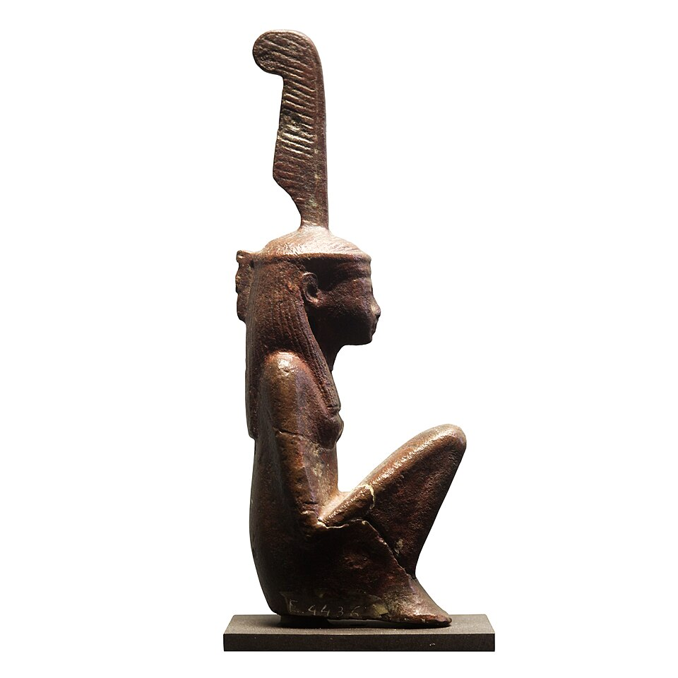

Богиня, которая является также принципом
Маат непереводима точно: это одновременно истина, справедливость, правильный порядок вещей и само мироздание в его исправном состоянии. Противоположность ей — исфет: хаос, ложь, насилие, распад. Для египтянина мир не «дан навсегда»: он каждый день удерживается Маат, как плотина удерживает воду. Сделать «по-Маат» — значит поступить верно, по месту и по мере; солгать, обвесить, нарушить слово — значит буквально подтачивать фундамент вселенной.
Как богиня Маат — дочь Ра (по большинству текстов): сам солнце-творец породил то, чем держится его творение. Её знак — страусиное перо (в иероглифике — определитель «истины») на голове, иногда — крылья по сторонам тела. У Маат не было больших храмов: её не просили — её соблюдали. Храм Маат стоял в Карнаке («Храм Маат в Карнаке» — зал суда?), а её жрецами называли себя судьи.
Пища богов
Тексты говорят буквально: «Ра живёт Маат», боги кормятся Маат, как люди хлебом. Фараон подносит Маат богам на барельефах — маленькую фигурку на ладони: царь возвращает небесам их пищу, порядок, — и тем самым оплачивает существование мира. Отсюда царский титул «владыка Маат» (или «возлюбленный Маат»): правота царя измеряется не победами, а соблюдением равновесия. «Отправление Маат» (маа-херу — то самое «истинно голосом», эпитет Осириса и праведника) — центральное слово египетской этики.
Маат на суде мёртвых
В Зале Двух Истин сердце умершего кладут на одну чашу весов, на другую — перо Маат. Если сердце тяжелее — в нём грех, и его пожирает Амат; если в равновесии — умерший «истинен голосом» и входит в рай Тростниковых полей. Перед весами умерший произносит «отрицательное исповедание»: сорок+ отрицаний — «я не убил, не украл, не причинил боли, не солгал, не нарушил меру зерна…» — список грехов, которые Маат отвергает. Это, по сути, древнейший кодекс совести — и работает он даже с богами: Ра «судит Маат», а не произволом.
Северное родство
У скандинавов Маат функционально близка урðар-орлогу — «устоявшемуся порядку», который даже асы не отменяют, и тингу — суду как сакральному порядку: сравнение. Но есть разница: Маат космична (ею кормятся боги), орлог — скорее юридичен и фаталистичен. Египет верил, что порядок можно восстановить человеком; Север знал, что порядок держится до времени, а Рагнарёк — его конец. Это два разных ответа на один вопрос: что удерживает мир от распада.